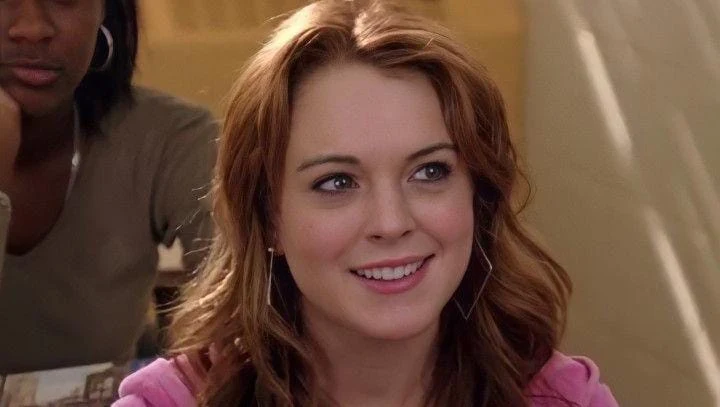
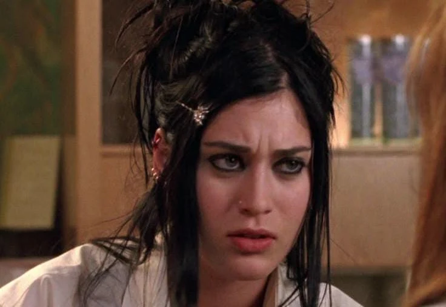
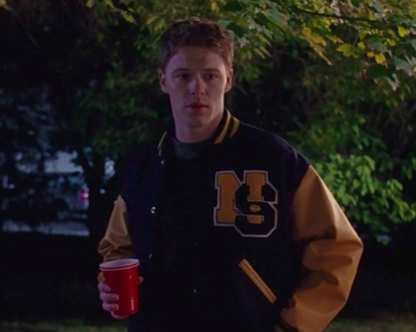

Cady Heron
Uma estudante nova na escola que acaba entrando para o grupo das Poderosas.
ARQUIVO DE PERSONAGENS
Conheça os personagens que fazem parte do universo de Meninas Malvadas.
PERSONAGENS PRINCIPAIS

Uma estudante nova na escola que acaba entrando para o grupo das Poderosas.
A líder das Poderosas e uma das personagens mais populares da escola.
A garota mais avoada e engraçada do trio principal.
A leal e fofoqueira integrante do grupo de Regina.

A colega de Cady que ajuda a planejar uma forma de enfrentar Regina.
O melhor amigo de Janis, conhecido por seu jeito divertido e sarcástico.
O garoto popular por quem Cady se interessa.
A professora de matemática que ajuda Cady durante a história.
O diretor da escola onde Cady estuda.
A mãe de Regina, conhecida por seu jeito descontraído.

Um dos alunos populares da escola.

O líder do grupo de matemática da escola.